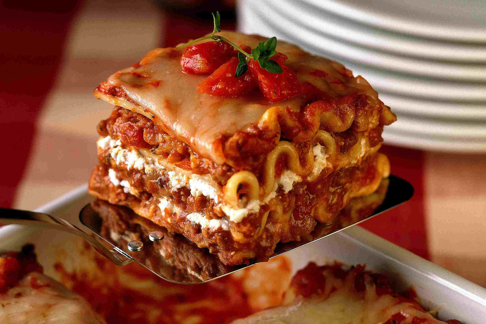

Lasagna

Description
Lasagna is a delicious dish that is enjoyed by many around the world.
Having originated in ancient Rome before being adopted by the
Italians, every family--and restaurant!--has their own special
take on the dish.
Today, I'll be walking you through Danilo Alfaro's lasagna recipe.
Their recipe employs both red and white sauce, ensuring that
there is peace at the dinner table when it turns out that
Joey doesn't like eating white sauce anymore!
Ingredients
For The White Sauce:
- 4 tbs butter
- 2 1/2 cups whole milk
- 1/3 cup all-purpose flour
- 1/2 tsp kosher salt
For The Red Sauce:
- 2 tbs olive oil
- 1/2 pound ground beef
- 1/2 pound ground pork
- 1 medium onion, chopped
- 6 to 8 white mushrooms, sliced
- 3 cloves garlic, minced
- 2 28-ounce cans tomato sauce
- 2 tsps dried oregano
- 2 tsps dried basil
- kosher salt, to taste
- black pepper, to taste
For Assembling:
- 1 package oven-ready lasagna noodles
- 2 cups shredded mozzarella cheese
- 1/2 cup grated Parmesan cheese
Steps
For The White Sauce:
- Melt the butter in a heavy-bottomed saucepan.
- Warm milk in another saucepan. Do not let it boil.
- Add flour to melted butter and stir to form a roux. Cook
for about two minutes.
- Slowly whisk in warm milk. Season with kosher salt.
- Turn off heat and reserve, covered.
For the Red Sauce:
- In a large skillet, heat up olive oil and add ground
beef and pork.
- Cook until all meat is well-browned, approximately
8 minutes.
- Drain excess fat from meat and reserve 2 tbs in
skillet. Remove meat mixture from pan. Cover and set
aside.
- Add onion to skillet with reserved fat and sauté
until translucent, about 6-7 minutes.
- Add mushrooms and garlic to skillet. Cook until mushrooms
are soft, or 5 minutes.
- Return meat to pan and stir well.
- Add tomato sauce and dried herbs.
- Bring meat sauce to simmer and cook for another 5 minutes.
Remove red sauce from heat and season to taste with salt
and pepper.
Assemble the Lasagna:
- Preheat oven to 400F. In 3-quart ovenproof baking
dish, ladle enough red sauce to cover bottom of dish.
- Arrange layer of pasta atop red meat sauce, then add
red sauce.
- Drizzle about 1/3 of white sauce even atop red sauce.
- Repeat previous step twice by layering layers of
pasta, red sauce, white sauce.
- Spread shredded mozzarella on top of final white sauce
layer.
- Sprinkle grated parmesan on top of mozzarella.
- Cover dish tightly with foil and bake for 40 minutes.
- After 40 minutes, remove foil and bake for about
10 more minutes, or until cheese on top has browned
slightly. Remove from oven and let rest for 10 minutes.
- Enjoy!